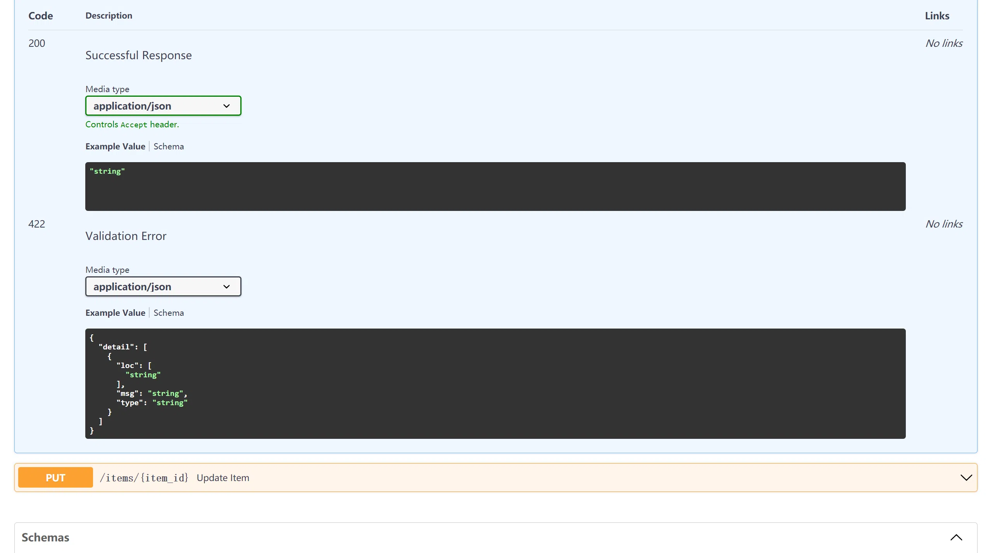

FastAPI教程-路径参数
本文最后更新于：2021年6月20日 下午
可以使用与 Python 格式化字符串相同的语法来声明路径”参数”或”变量”：
1 | |
路径参数 item_id 的值将作为参数 item_id 传递给你的函数。
所以，运行示例并访问 http://127.0.0.1:8000/items/foo，将会看到如下响应：
1 | |
有类型的路径参数
可以使用标准的 Python 类型标注为函数中的路径参数声明类型。
1 | |
在这个例子中，item_id 被声明为 int 类型。
这将为你的函数提供编辑器支持，包括错误检查、代码补全等等。
数据转换
如果运行示例并打开浏览器访问http://127.0.0.1:8000/items/3，将得到如下响应：
1 | |
注意函数接收（并返回）的值为 3，是一个 Python int 值，而不是字符串 “3”。
所以，FastAPI 通过上面的类型声明提供了对请求的自动”解析”。
数据校验
但如果你通过浏览器访问http://127.0.0.1:8000/items/foo，你会看到一个清晰可读的 HTTP 错误：
1 | |
因为路径参数 item_id 传入的值为 "foo"，它不是一个 int。
如果你提供的是 float 而非整数也会出现同样的错误，比如：http://127.0.0.1:8000/items/1.2
所以，通过同样的 Python 类型声明，FastAPI 提供了数据校验功能。
注意上面的错误同样清楚地指出了校验未通过的具体原因。
在开发和调试与你的 API 进行交互的代码时，这非常有用。
文档
打开浏览器访问http://127.0.0.1:8000/docs，你将看到自动生成的交互式 API 文档：

路径操作的顺序
在创建路径操作时，你会发现有些情况下路径是固定的。
比如 /users/me，我们假设它用来获取关于当前用户的数据.
然后，你还可以使用路径 /users/{user_id} 来通过用户 ID 获取关于特定用户的数据。
由于路径操作是按顺序依次运行的，你需要确保路径 /users/me 声明在路径 /users/{user_id}之前：
1 | |
否则，/users/{user_id} 的路径还将与 /users/me 相匹配，”认为”自己正在接收一个值为 "me" 的 user_id 参数。
预设值
如果你有一个接收路径参数的路径操作，但你希望预先设定可能的有效参数值，则可以使用标准的 Python Enum 类型。
创建一个 Enum 类
导入 Enum 并创建一个继承自 str 和 Enum 的子类。
通过从 str 继承，API文档将能够知道这些值必须为 string 类型并且能够正确地展示出来。
然后创建具有固定值的类属性，这些固定值将是可用的有效值：
1 | |
输出结果：
1 | |
获取枚举值
可以使用 model_name.value 或通常来说 your_enum_member.value 来获取实际的值（在这个例子中为 str）。
你也可以通过 ModelName.tony.value 来获取值 “tony”。
返回枚举成员
你以从路径操作中返回枚举成员，即使嵌套在 JSON 结构中（例如一个 dict 中）。
包含路径的路径参数
路径转换器
可以使用直接来自 Starlette 的选项来声明一个包含路径的路径参数：
1 | |
在这种情况下，参数的名称为 file_path，结尾部分的 :path 说明该参数应匹配任意的路径。
因此，可以这样使用它：
1 | |
访问http://127.0.0.1:8000/files/linux/holy输出结果如下：
1 | |
可能会需要参数包含 /home/johndoe/myfile.txt，以斜杠（/）开头。
在这种情况下，URL 将会是 /files//home/johndoe/myfile.txt，在files 和 home 之间有一个双斜杠（//）。
本博客所有文章除特别声明外，均采用 CC BY-SA 4.0 协议 ，转载请注明出处！